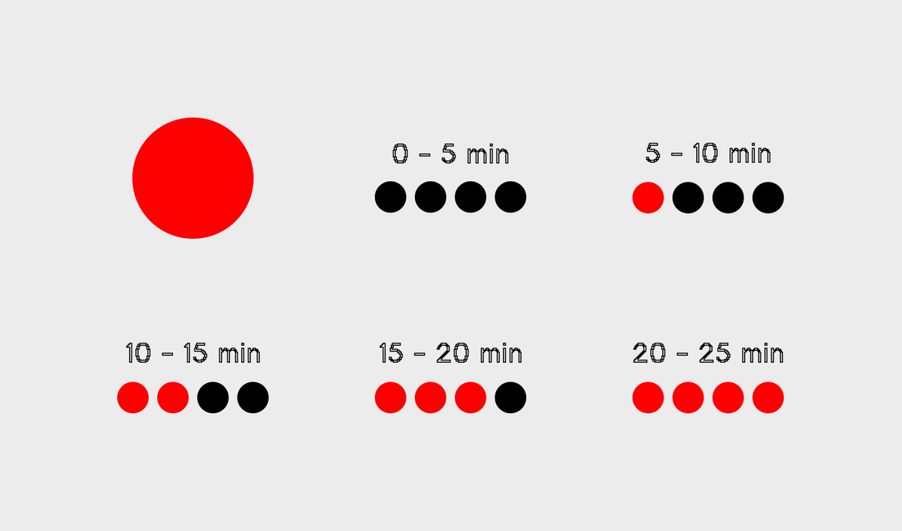
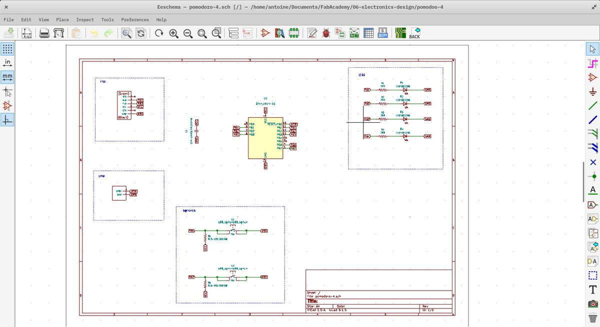

Electronics design
I knew almost nothing about electronics before following the Fab Academy. I still have to learn and understand the very basics of a circuit and its composents, but also of electricity and its flow. To do so, I designed a pomodoro timer from scratch. I've learn a lot throughout the process and I've the feeling that this new knowledge will play a key role in what I'll do for my personal project and afterwards.
Pomodoro timer
I use a pomodoro timer daily to help me manage my time and effort in the tasks I want to accomplish. For now, I'm using Pydoro, an open source pomodoro terminal timer written in Python but I would like to build mine and have it physically next to my laptop.
The Pomodoro Technique is a time management method developed by Francesco Cirillo in the late 1980s. The technique uses a timer to break down work into intervals, traditionally 25 minutes in length, separated by short breaks. Each interval is known as a pomodoro, from the Italian word for 'tomato', after the tomato-shaped kitchen timer that Cirillo used as a university student.

Components
The main component I'm using is the microcontroller ATtiny1614. It will allow me to program my inputs and outputs needed to run my project.
As outputs, I've 4 LEDs that are used to visualize the time passing by and the interactions with the pomodoro timer. As inputs, I've to 2 switches (buttons) that allow me to start/pause/resume/reset the timer.
I also need 6 resistor (one for each of the inputs/outputs), a capacitor, a FTDI header (to be able to communicate with the boards), a UPDI header (to program the board).

Designing
I'm using KiCAD, a cross platform and open-source software for designing electronics.

Schematics
PCB
Exporting
(Inkscape & Gimp & Fabmodules)